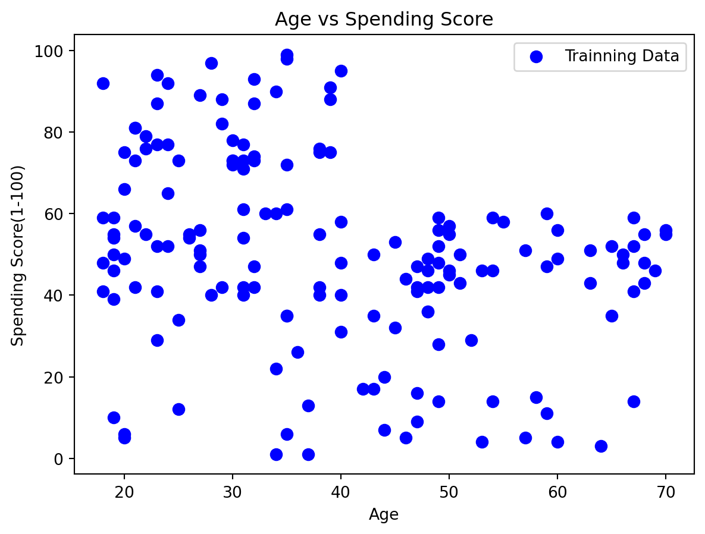
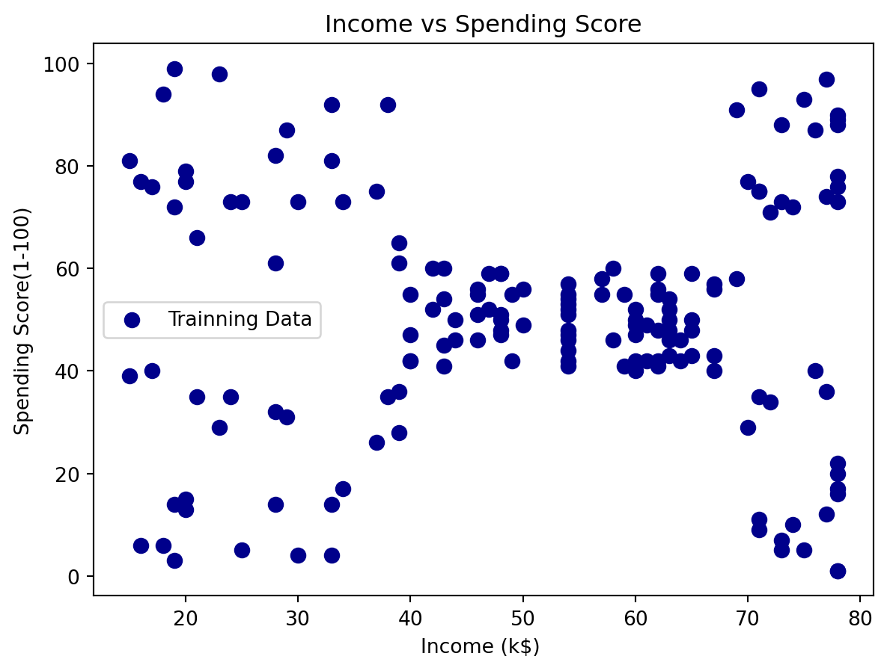
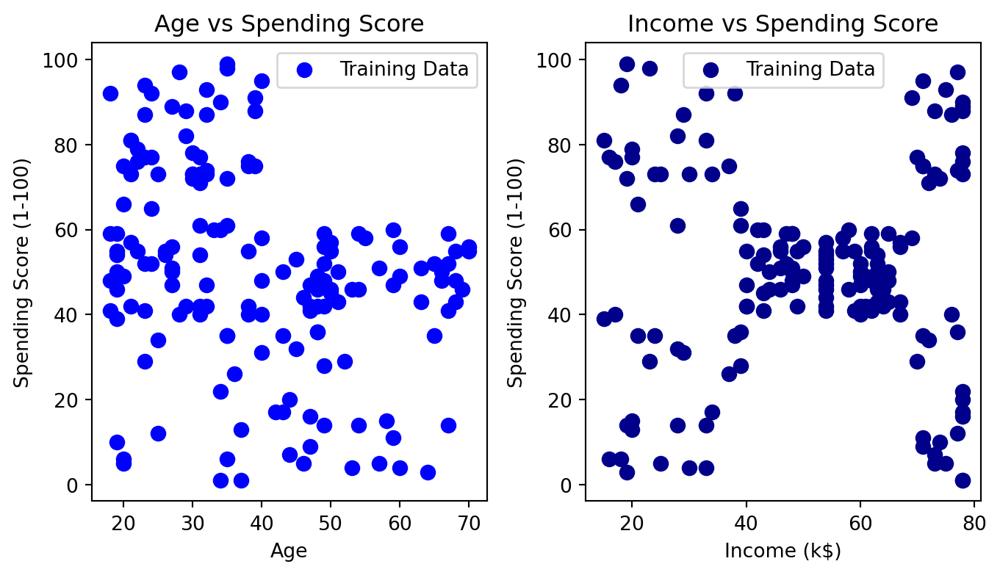
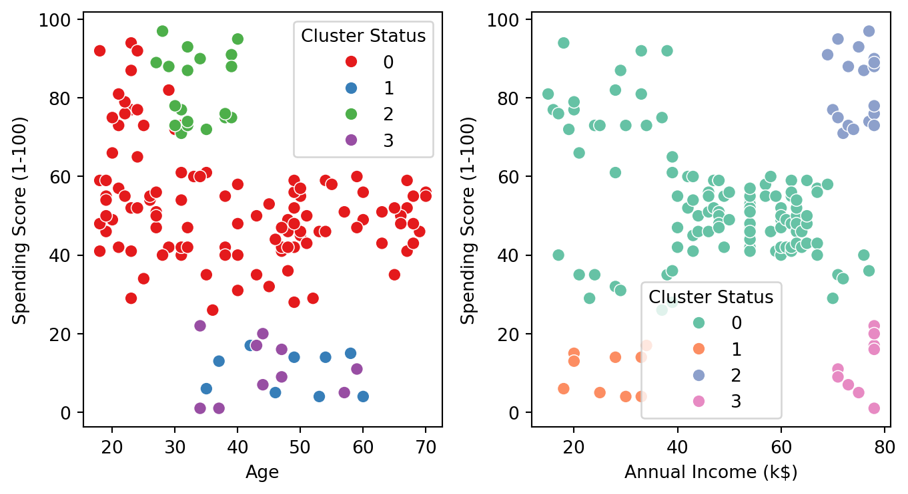

import numpy as np
import matplotlib.pyplot as plt
import seaborn as sns
import pandas as pd
from sklearn.cluster import DBSCAN
from IPython.display import display, HTMLClustering - DBSCAN
Statistics
Python
Machine Learning
Understanding how to use the DBSCAN to cluster on Mall Customers
Clustering
Clustering is utilized on a dataset to group comparable sets of data points, discerning both shared characteristics and distinctions among the data points. This method brings together data points without relying on predefined labels, making it an unsupervised learning approach designed to reveal the inherent structure within the dataset.
My emphasis will be on density-based clustering techniques, particularly the DBSCAN algorithm implemented using scikit-learn. Density-based algorithms excel at identifying high-density regions and outliers, making them well-suited for tasks such as anomaly detection and clustering non-linear datasets.
In this note, I use the sklean library to understand the DBSCAN application.
Dataset
The Mall Customer’s data comes from Kaggle website, which will be used mine explanation in DBSCAN. If you want to follow my notes, please download the dataset from here:
https://www.kaggle.com/datasets/vjchoudhary7/customer-segmentation-tutorial-in-python
First, in order to make you analyze smoothly, I have to observe the dataset. The dataframe we called df is the key point to understand the data skema, including how many entires in the dataset, how many column in the dataset, and what’s the type of each column. Compared to using the info() method, show attribute can understand how many entries & how many column in the dataset.
To me, I usually use df.info() first because I can confirm whether I should do data clean or not!
# Loading Data from CSV file
df = pd.read_csv('../../dataset/MallCustomer/Mall_Customers.csv')
df.info()<class 'pandas.core.frame.DataFrame'>
RangeIndex: 200 entries, 0 to 199
Data columns (total 5 columns):
# Column Non-Null Count Dtype
--- ------ -------------- -----
0 CustomerID 200 non-null int64
1 Genre 200 non-null object
2 Age 200 non-null int64
3 Annual Income (k$) 200 non-null int64
4 Spending Score (1-100) 200 non-null int64
dtypes: int64(4), object(1)
memory usage: 7.9+ KBBased on the provided dataset information, my decision is to specifically focus on analyzing the correlation among Age, Annual Income, and Spending Score variables. To delve into this analysis, I have opted to allocate 80% of the dataset for trainning purposes, reserving the remaining 20% for testing. This division allows for a comprehensive exploration of the relationships between the selected variables and ensures a robust evalution of the model’s performance on unseen data during the testing phase.
# Select dataframe:
X = df[['Age', 'Annual Income (k$)', 'Spending Score (1-100)']]
# Training Data:
X_train = X.iloc[:160,:]
# Testing Data:
X_test = X.iloc[160:,:]Before starting to cluster the data, I want to know about the training data scatter plot. Using matplotlib to visualize the data. Here are some basci attribute or method I used. 1. scatter() –> setting X scale, Y scale, label name, s mean size, c mean color; 2. title() –> Graph Title 3. xlabel() –> Xlabel 4. ylable() –> Ylabel 5. legend() –> plot intruction 6. show() –> demonstrate the plot
# Setting the Scale
X_scale_Income = X_train['Annual Income (k$)'];
X_scale_Age = X_train['Age'];
Y_scale_Score = X_train['Spending Score (1-100)'];# Scatter Plot - Age vs Spending Score
plt.scatter(X_scale_Age, Y_scale_Score, label = 'Trainning Data', s = 50, c= 'blue');
plt.title('Age vs Spending Score');
plt.xlabel('Age');
plt.ylabel('Spending Score(1-100)');
plt.legend();
plt.show();
# Scatter Plot - Income vs Spending Score
plt.scatter(X_scale_Income, Y_scale_Score, label = 'Trainning Data', s = 50, c = 'darkblue');
plt.title('Income vs Spending Score');
plt.xlabel('Income (k$) ');
plt.ylabel('Spending Score(1-100)');
plt.legend();

ps. Demonstrate the Graph in one row with two column
Above graph using column style to demonstrate the outcome, it’s really hard to tell what’s the differences or relations between 2 graphs in a specific area. So, I decide to using the plt.figure API & axes.ravel() to control the graphs, which not only show the graph in one row but also compare easily.
The biggest different in code is using axes to control the each graph.
# Setting the graph & layout
# Using ggplot style
# plt.style.use('ggplot');
# Create Graph
fig = plt.figure('Consumption Capacity');
# Create a layout: 2 colums in one row
axes = fig.subplots(nrows = 1, ncols = 2);
# Using ax1 & ax2 to control two graph separately
ax1, ax2 = axes.ravel();
# Scatter Plot - Age vs Spending Score
ax1.scatter(X_scale_Age, Y_scale_Score, label='Training Data', s=50, c='blue')
ax1.set_title('Age vs Spending Score')
ax1.set_xlabel('Age')
ax1.set_ylabel('Spending Score (1-100)')
ax1.legend()
# Scatter Plot - Income vs Spending Score
ax2.scatter(X_scale_Income, Y_scale_Score, label='Training Data', s=50, c='darkblue')
ax2.set_title('Income vs Spending Score')
ax2.set_xlabel('Income (k$)')
ax2.set_ylabel('Spending Score (1-100)')
ax2.legend()
# Adjusting layout
fig.subplots_adjust(left=0.05, bottom=0.2, right=0.95, top=0.85, hspace=0.1, wspace=0.25)
plt.show()
After knowing the basic graph, I just only know the basic information about Spending Score. For example, it’s quite easy to find out the age of 20 - 40 have higher score than other ages; in addition, 40K - 60K is centralizer than other cluster, which looks like their purchasing ability is normal. But, what about other cluster? How can we group efficiently? One of the clustering algorithm called DBSCAN.
DBSCAN
DBSCAN, which stands for Density-Based Spatial Clustering of Applications with Noise, is a clustering algorithm that identifies groups of data points closely positioned to each other (points with numerous nearby neighbors). Simultaneously, it labels points in regions with low density as outliers.
DBSCAN algorithm contains to hyperparameters: - Eps : A distance threshold - min_samples : A minimum number of points
The DBSCAN algorithm initiates by choosing a random point from the dataset and fetching all points within Eps distance. If the count of points retrieved within the eps distance and exceeds the min_number of threshold (min_sample), the selected poins is deemed a “core point”, and a cluster is formed. The process will repeated for points until all points will be visited.
Let’s start to try a random eps and min_samples.
# pick eps & min_sample randomly
dbscan = DBSCAN(eps = 13.5, min_samples = 5);
dbscan.fit(X_train);When I adjust the parameter, I find out close to 10 - 13 in eps and min_samples around 3 - 5 can decrease the noise number. Right now, I just randomly choose the parameter.
X_train = X_train.copy();
X_train['Cluster Status'] = dbscan.labels_;X_train| Age | Annual Income (k$) | Spending Score (1-100) | Cluster Status | |
|---|---|---|---|---|
| 0 | 19 | 15 | 39 | -1 |
| 1 | 21 | 15 | 81 | 0 |
| 2 | 20 | 16 | 6 | -1 |
| 3 | 23 | 16 | 77 | 0 |
| 4 | 31 | 17 | 40 | 0 |
| ... | ... | ... | ... | ... |
| 155 | 27 | 78 | 89 | 2 |
| 156 | 37 | 78 | 1 | 3 |
| 157 | 30 | 78 | 78 | 2 |
| 158 | 34 | 78 | 1 | 3 |
| 159 | 30 | 78 | 73 | 2 |
160 rows × 4 columns
# Create subplots for visualization
fig = plt.figure("DBSCAN");
(ax) = fig.subplots(nrows = 1, ncols = 2);
x_income = 'Annual Income (k$)';
x_age = 'Age';
y_score = 'Spending Score (1-100)';
data = Ｘ_train[Ｘ_train['Cluster Status'] != -1];
hue = 'Cluster Status';
# Scatter plot for Age and Spending Score
sns.scatterplot(x = x_age,
y = y_score,
data = data,
hue = hue,
legend='full',
palette='Set1',
ax=ax[0],
s=50)
# Scatter plot for Annual Income and Spending Score
sns.scatterplot(x = x_income,
y = y_score,
data = data,
hue = hue,
legend='full',
palette='Set2',
ax=ax[1],
s=50);
fig.subplots_adjust(left=0.05, bottom=0.2, right=0.95, top=0.85, hspace=0.1, wspace=0.25)
As evident from the presented information, we employed the DBSCAN algorithm to perform clustering, a technique widely used in data analysis and pattern recognition. In this process, data points are grouped into clusters, and the categorization of each cluster is determined by the specified values of ‘eps’ (epsilon) and ‘min_samples.’ The parameter ‘eps’ defines the maximum distance between two data points for one to be considered as in the neighborhood of the other, while ‘min_samples’ sets the minimum number of data points required to form a dense region, which is essential for identifying meaningful clusters. This approach not only aids in understanding the inherent structure within the data but also allows for the identification of groups that may exhibit similar characteristics or behavior patterns.